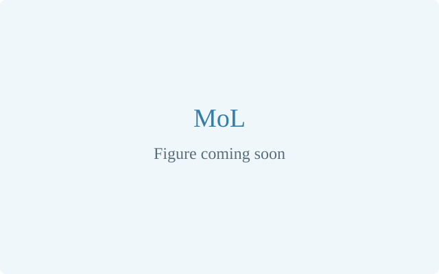
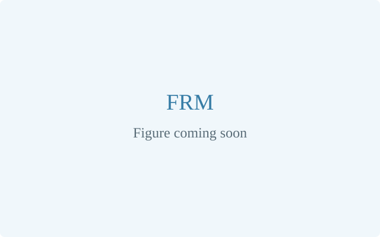
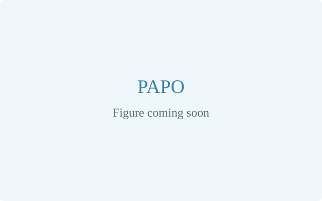
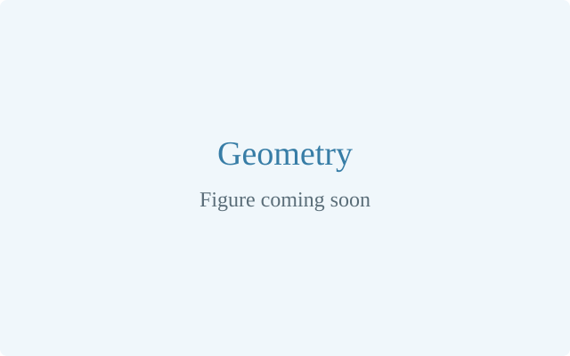
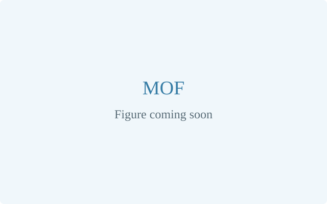
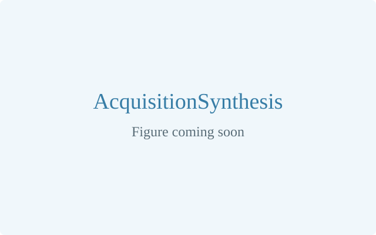
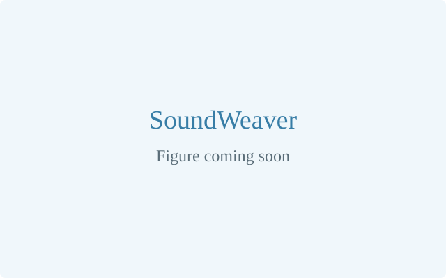

Mixture of Layers: Dynamic Layer Routing for Visual Reasoning
NeurIPS 2026
Dynamically selects query-relevant vision layers, improving fine-grained visual reasoning by up to 18.9%.
Hi! I am a computer science undergraduate at the University of Illinois Urbana-Champaign. I learn with the goal of building models and systems that better understand the world.
My research focuses on multimodal reasoning, visual grounding, and efficient model serving. Currently, I am part of Heng Ji's Blender Lab, where I research how models select and represent visual information, how they recognize objects under physical degradation, and how reinforcement learning can strengthen the connection between perception and reasoning.
However, my love for learning has fostered exploration and collaborations in areas ranging from data generation synthesis to systems. I am working with Dilek Hakkani-Tur Conversational AI Lab to investigate investigate acquisition-guided data synthesis; Fan Lai's GAEA lab to investigate semantic warm-starting for audio diffusio, and Argonne National Laboratory × NVIDIA to investigate improved policy gradient methods for post-training diffusion models for metal–organic framework generation.
If any of these topics sound interesting, I would love to connect!
Two papers accepted to NeurIPS 2026!
🔀 MoL dynamically selects query-relevant vision layers, improving fine-grained visual reasoning by up to 18.9%.
🔥 FRM recovers pristine-aligned features from physically degraded objects, improving retrieval, material recovery, description generation, and functional reasoning by 12–20% on average.
One paper accepted to ICLR 2026!
👁️ PAPO strengthens visually grounded reasoning with a perception-aware policy objective, improving multimodal reasoning by 4.4–17.5% overall and reducing perception errors by 30.5%.
* Equal contribution

NeurIPS 2026
Dynamically selects query-relevant vision layers, improving fine-grained visual reasoning by up to 18.9%.

NeurIPS 2026
Recovers pristine-aligned features from physically degraded objects, improving retrieval, material recovery, description generation, and functional reasoning by 12–20% on average.


CVPR 2027 submission
Investigates how Euclidean, isotropic, and hyperbolic representations preserve visual information as objects change in texture or physical condition.

Argonne × NVIDIA
Investigates whether GRPO can teach generators to produce better metal–organic frameworks through reward feedback.

ICML 2027 submission
Uses active-learning acquisition functions as rewards to train generators to produce useful training examples.

ICLR 2027 submission
Reuses semantically similar cached audio and adaptively skips denoising steps, cutting latency by nearly 50% while maintaining or improving quality.
ICCPSMLA 2023 · WASET 2024
Studies stock-price prediction using historical data.